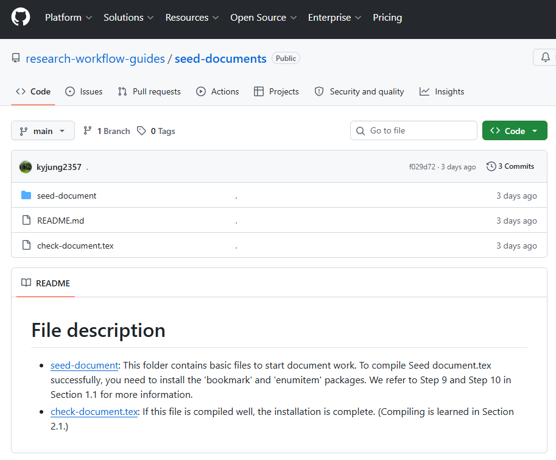

Section 1.5
Basic Document Pack
A starter pack of LaTeX files used throughout this course.
Download
Download the basic document pack from GitHub. On the repository page, click the button, then click Download ZIP.

File description
Seed document/
A folder containing the basic files needed to start document work. To compile Seed document.tex successfully, install the bookmark and enumitem packages — refer to Steps 9 and 10 in Section 1.1.
Check document.tex
If this file compiles without errors, your installation is complete. Compiling is covered in Section 2.1.
keybindings.json
Keyboard shortcut configuration file. Covered in Section 2.1.1.
latex.json
Basic User Snippets file. User Snippets are covered in Section 2.1.5.
settings.json
VS Code settings configuration file. Covered in Section 2.1.1.